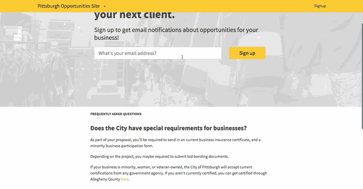
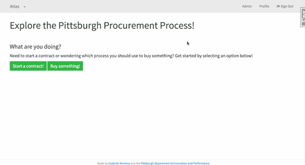
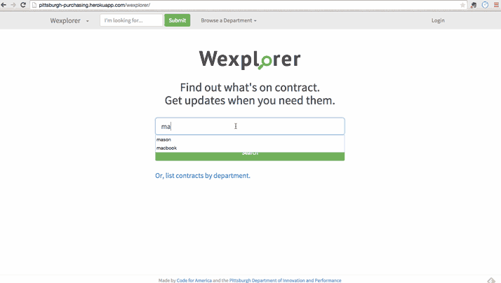
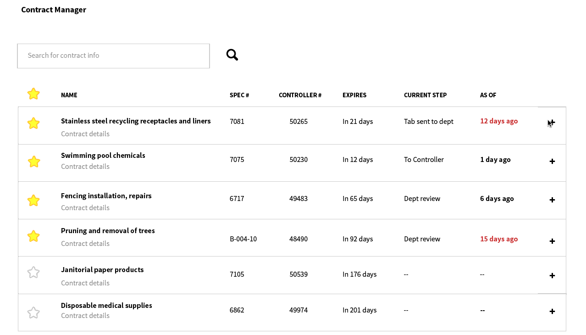

Executive Summary
The ways in which governments buy what they need is a fundamental part of how they function. Improving procurement requires addressing the basics, which carries implications for the ways governments provide quality service to their citizens. The Code for America team in Pittsburgh is partnering with the City of Pittsburgh’s Office of Innovation and Performance and the RK Mellon Foundation to help tackle these problems.
In February, the Pittsburgh team conducted user interviews with over 50 City employees as well as 25 local businesses. These conversations highlighted frustrations shared across the board.
Tasked with making procedural and technological inroads with procurement in Pittsburgh, the Code for America fellows identified three distinct but related problem areas and are currently building out tools to help address them:
| Problem Area | Tool(s) |
|---|---|
Marketplace
|
|
Playbook
|
|
Inventory
|
|
Background on Pittsburgh
Pittsburgh is a post-rust belt success story, with a booming new economy centered around its universities, hospitals and philanthropic institutions. Pittsburgh has long been an industrial powerhouse. Major figures such as Andrew Carnegie, George Westinghouse, Thomas and Andrew Mellon, and H.J. Heinz all called Pittsburgh home, and since the collapse of the steel industry over a century later, the City transformed itself into a hub for innovation. Supported by institutions like Carnegie Mellon University and The University of Pittsburgh, the region leads in areas of robotics, biomedical technology, and nuclear engineering. Pittsburgh houses several Silicon Valley companies as well, like Google, Uber, IBM, and Apple.
Pittsburgh is a vibrant place to live, consistently ranked among the most livable cities nationally. A classic American sports town, it is difficult to walk a block without seeing the black and gold of Pittsburgh’s Penguins, Steelers, and Pirates franchises, which occupy a cherished spot in the City’s consciousness. On the forefront of environmental urban design, the City houses ten of the world’s first green-certified buildings. Pittsburgh is home to numerous cultural institutions, including the Andy Warhol Museum, the Carnegie Museum of Art, The Phipps Conservatory, and the Mattress Factory. In addition to these cultural amenities, the City supports a thriving small business community, dotted with new restaurants, bars, boutiques, and coffee shops. For these reasons, Pittsburgh remarkable resurgence is unsurprising.
Team
 Patrick is a civic hacker who likes to understand problems through maps and data visualizations. Before Code for America, Patrick managed open geographic data and spatial applications as a GIS Analyst with the City of Philadelphia's Office of Innovation & Technology.
Patrick is a civic hacker who likes to understand problems through maps and data visualizations. Before Code for America, Patrick managed open geographic data and spatial applications as a GIS Analyst with the City of Philadelphia's Office of Innovation & Technology.
 Shelly is a designer and researcher dedicated to improving public services. Recently, she has worked on user-friendly food stamp applications and guides for New Yorkers applying for basic IDs. Previously, she has consulted for a variety of non-profits and led UX projects for startup teams. She holds design degrees from Stanford and the School of Visual Arts.
Shelly is a designer and researcher dedicated to improving public services. Recently, she has worked on user-friendly food stamp applications and guides for New Yorkers applying for basic IDs. Previously, she has consulted for a variety of non-profits and led UX projects for startup teams. She holds design degrees from Stanford and the School of Visual Arts.
 Ben is a software developer originally from Pittsburgh. After graduating from the University of Chicago with a degree in Public Policy, Ben worked on the digital and data teams for the re-election campaign for Obama 2012. Following that, Ben joined Spotify and worked on both Analytics and Data Engineering teams.
Laura is currently the Analytics and Strategy Manager for the City of Pittsburgh. Previously, she served as a 2013 Code for America Fellow, and a Presidential Management Fellow at the Department of Housing and Urban Development, where she worked on agency performance management and developed a place-based data driven review process. Prior to that she worked on a community data and mapping system in Pittsburgh, PA.
Ben is a software developer originally from Pittsburgh. After graduating from the University of Chicago with a degree in Public Policy, Ben worked on the digital and data teams for the re-election campaign for Obama 2012. Following that, Ben joined Spotify and worked on both Analytics and Data Engineering teams.
Laura is currently the Analytics and Strategy Manager for the City of Pittsburgh. Previously, she served as a 2013 Code for America Fellow, and a Presidential Management Fellow at the Department of Housing and Urban Development, where she worked on agency performance management and developed a place-based data driven review process. Prior to that she worked on a community data and mapping system in Pittsburgh, PA.
Marketplace
The Issues
Businesses interested in working with the city cannot easily access information about work opportunities.
Businesses can find out about work opportunities through the following official channels:
- The classifieds section of local newspapers, which are the only required public advertising channel for work opportunities over $30,000. Businesses have to keep checking the classifieds because there is no way to subscribe.
- The Office of Management and Budget’s website, which posts some professional service opportunities. There is no way to subscribe to the site, and the opportunities posted here are not comprehensive.
- The Pennsylvania Purchasing Group’s site, which lists opportunities to sell commodities and non-professional services. Unfortunately, details about the opportunities are hidden behind a lengthy sign-up process that you can see below. To subscribe, businesses must pay a monthly fee to get email notifications.
Few businesses bid on work opportunities.
Oftentimes few if any businesses respond to city solicitations. The less businesses that compete for city work, the less public procurement functions like an actual market. City departments then end up paying higher prices for lower quality services when they have fewer options to choose from. We hypothesized that the low turnout for bids was in large part because of communication. Communication issues include confusing, formal language used in advertisements, not advertising opportunities in advance, and using channels like the classified section of local papers that are hard for businesses to follow.
Learnings from user reserach
Everytime I send out an order for these needles, I’m starting the next order. I can only order 30 at a time.— Pittsburgh EMS logistics team member
We interviewed the logistics team at the Pittsburgh EMS department, and discovered that life-saving medical equipment is sometimes in short supply. In particular, it is difficult to keep a special type of needle in stock. These needles are drilled straight into bone marrow. They are the fastest way of getting IVs into severely injured patients — especially kids, who have smaller veins. Because the only business that supplies them in the Pennsylvania area missed the window for applying to become a bulk supplier for the city, Pittsburgh paramedics can only buy about 30 needles at a time. Pittsburgh has a fairly low explanatory threshold of $2,000, which is the maximum amount of money staff can spend on goods from businesses without a bulk-buying agreement. Sending out enough small orders to keep needles in stock for unpredictable accidents is a constant battle.
I didn’t win the bid, but I’m proud that my business is at a point where I could jump through all the city hoops and be on the same playing field as other companies.— Small business owner
We were surprised to hear from a local art gallery owner and general contractor who was second in the running for a construction contract. Though he did not win the bid, in his view the fact that he made it so far in the process bestowed a sense of legitimacy to his business. He was able to put together documents like insurance certificates and bid bonds, and thinks of being at a level where he could be seriously considered for city work to be a badge of honor. Though applying for and winning city work can be tedious, it is important for us to remember that some business owners are proud to have gone through the process and like knowing where they stood in comparison with other bidders.
I have a lot of patience and drive. Give me a blueprint that tells me who I need to talk to, what rules I have to follow, and where to go to find out about work. The City is like a black box.— Small business owner
In early February, we assisted the Neighborhood Empowerment Bureau with a session of a Small Business Resource Fair, a joint initiative by the Pittsburgh Mayor’s office and the Urban Redevelopment Authority (URA). We talked to half a dozen small business owners, who were all very interested in working with the City, but did not know where to start or how to be prepared for future opportunities.
Putting a [work opportunity] out is like throwing a message into the ocean, or a black hole.— Citiparks Staff
Just as businesses think of city processes as an enigma, city staff think of the bidding process as mysterious and frustrating. Jim and his team at Citiparks put out an opportunity for cleaning services at 22 Citiparks facilities three times, which never received more than two bids. They were understandably frustrated when we initially spoke to them in February, stuck without the service they needed to maintain their facilities.
Metrics & Goals
We can provide great value to city staff and the local business community by increasing the number of businesses who know about and respond to city opportunities.
Measuring our impact in this area, we will look to the number of businesses subscribed to a list to receive notifications about upcoming opportunities, the number of businesses who submit proposals to future opportunities, and the number of opportunities posted to the site by city staff.
To help enhance some of the other outreach work the city is already doing, we also plan to make the list of businesses subscribed accessible to city staff who manage existing mailing lists of business district managers and minority business owners.
Prototyping
The first question we wanted to answer was whether lack of communication is a barrier to businesses that might be interested in city opportunities. We worked with Citiparks staff from March through May to launch a pilot outreach campaign for their upcoming cleaning services RFP.
What did our pilot involve?
- Creating a spreadsheet with Citiparks staff of contact information for cleaning services from publicly available Yelp data and existing cleaners on city mailing lists. We found a total of 63 businesses with email addresses.
- A Mailchimp list to gather email addresses of interested businesses.
- Inviting businesses on that spreadsheet to sign up for an email mailing list, to be notified of upcoming cleaning opportunities.
- Launching a website four weeks before the window for businesses submitting proposals opened. The website featured an email subscription link, parts of the RFP most useful for businesses (structured as a FAQ), and a map of cleaning sites.
- Publicizing the opportunity with tweets and a press release from the Mayor’s office.
- Adding answers from Citiparks staff to questions businesses asked while the opportunity was open.
- Sending reminders to the mailing list about Q&A deadlines and the deadline for submitting a proposal.
Our pilot exceeded our expectations. When we launched on April 1st, announcing the site to our list as well as the City's social media channels, a total of 14 businesses signed up. By the day before the deadline on May 7th, 44 businesses were subscribed. In total, 16 businesses sent in proposals. This is a huge increase, especially when compared to the zero, one, and two proposals Citiparks had received earlier.
Product
The success of our pilot with Citiparks supports our hypothesis that communicating work opportunities in a timely and human-friendly way will increase the number of businesses who submit proposals. The next step to reaching our goal is creating a centralized website to advertise work opportunities from all city departments. We are calling it Beacon.
We have gathered feedback about the content and design of such a site from city departments, the procurement team, as well as local businesses and chambers of commerce. Feedback has been positive enough that we are currently working to launch a minimum viable product (MVP) of the site in July. We learned from user testing sessions with business owners that they would sign up for the mailing list even if there were no opportunities currently posted. The MVP is up and running.
Core feature list:
- Friendly language that encourages businesses to sign up to be notified of city opportunities
- FAQ section that explains city procurement processes and requirements
- Sign up form for mailing list, which collects businesses’ contact info, minority certification status, and categories for goods and services they provide
- Confirmation email + 1-2 more emails for businesses who sign up, so that they do not feel like they have subscribed to an inactive list
We are continuing to improve the sign-up flow, which currently requires businesses to categorize the kinds of goods or services they provide according to procurement codes. In user testing, we have learned that businesses find the official codes hard to understand. We are currently converting these codes into human-friendly versions, and testing various redesigns of the sign-up interface so businesses can more easily to find the code(s) that best describes their business. We are documenting our progress as we go.
Beacon has to work for businesses interested in city work, and for city staff who have upcoming opportunities. We are still planning and prototyping the best way for city staff to add and edit posts to Beacon. Starting in July, the procurement team (housed in the Office of Management and Budget) will manage a trial run of upcoming work opportunities for professional services. In the past, professional services have been advertised and managed by city departments, which resulted in inconsistent RFPs and outreach. This move to centralize professional service opportunities and outreach is great for Beacon, because it means there will be city staff we can work with to collect information about upcoming opportunities.
Currently, we are collecting information about opportunities manually, using emailed Google surveys.
Next Steps
We are excited to work through the following features and unanswered questions so that Beacon can become a useful tool for increasing the number of businesses applying for city opportunities:
- Collect information from city departments about upcoming professional service opportunities for July through September of 2015
- Collect info for the above, from September 2015 to the end of the year
- Prototype easier ways for the procurement team to approve, edit and publish professional services opportunities
- Prototype easier ways for the procurement team to approve, edit and publish commodity and non-professional service opportunities.
- Prototype ways for the procurement team to update the status of opportunities under review
- Advertise Beacon to existing city mailing lists
- Advertise Beacon via city social media channels
- Potentially advertise Beacon at the Small Business Resource Fair and other in-person events
- Train staff at the Neighborhood Empowerment Bureau and the Equal Opportunity Review Commission to access the list of businesses on Beacon’s mailing list
Playbook
The Issues
Keeping track of all the different procurement procedures is anxiety-inducing for city staff.
For city staff who need to buy something not already on contract, navigating the ways the City adopts new contracts or buys off-contract is not an easy task. There are currently ten different procedures the city uses and determining which one is right for a particular good or service can be stressful. Is what you are buying more than $2,000 but less than $30,000? Is it an emergency purchase? Will you be making multiple purchases over time? Is it a service? If you are an office manager for a City department, obtaining a steady supply of paper requires navigating resolutions and memos just to determine what procedure you should follow. Suddenly, buying a ream of paper becomes a burdensome task.
Lack of well-documented, easy to find instructions often leads to wasted effort on the wrong process and extended back-and-forth.
Current procedures are also difficult to find. Staff typically ask around until they have found someone who contracted a similar good or service. Drawing from informal institutional knowledge can be a great thing, but sometimes leads city staff to pursue the wrong procedure.
Learnings from User Research
My biggest gripe is nothing is written down in terms of process.— City Public Art Manager
We hear from a lot of city staff who get in trouble trying to get what they need. In one conversation we learned about a time when the City’s Public Art Manager needed to hire contractors to help maintain art installations. He set about contacting 8+ firms by phone and email, tracking proposals, and documenting his process with a summary sheet for each response. When he sent his documentation to the Office of Management and Budget (OMB) for approval, he was disappointed when his award selection was initially denied because he had not followed the correct process. While he was supposed to send a list of specifications to their office and let OMB do the vendor selection for him, he instead did all the legwork himself only to have his selection rejected. Further, the procedure he was supposed to follow left him out of the selection process so he could not contribute his expertise on the subject. As he put it, "how the hell do they know what special things I need? How can they be the catch-all experts in all fields?"
Writing the software RFP for 311 without any guidance or templates to draw from was a long, anxiety-ridden process.— Pittsburgh 311 Manager
Many in the City feel like they are left in the dark by procurement. Unknowns in the procurement process cause anxiety, as one project manager expressed when telling us their experience looking for software development help for the Pittsburgh 311 application. To put out a Request for Proposals (RFP), select a vendor, and move to a finalized contract, they needed to obtain many documents (project budget, Scope of Work, confirmation of competitive bid process, etc.). Whenever they were missing one component the entire process had to be put on hold. The extended back and forth led to frustration and significant delays, which more than just a major time sink can be taxing emotionally.
If City staff worked with us like we were a private law firm, things would go much more smoothly. Would you show up to your lawyer’s office, charging you by the hour, with nothing?— Law Department
The law department also feels frustration surrounding documentation, albeit on the other side of the process. During the contracting phase, law is tasked with crafting an agreement that the City can use to make sure work gets done, but departments often show up unprepared, without many of the documents necessary to write a contract. Without proper documents or having done something incorrectly, law often cannot construct a strong and enforceable contract.
Metrics & Goals
We want to reduce anxiety and staff time creating contracting and bid documents. Confusion surrounding procurement procedures not only wastes a lot of time, but can strain professional relationships in the City.
To measure our impact, we will look to decrease the amount of time it takes to move a new contract from selecting a vendor to final contract. The contracting phase is where procedural mistakes hold things up and the time spent here is a good measure of the efficacy of the process as a whole.
Prototyping
We wanted to know where we could help surrounding documentation. Do city staff need help with templates, information about the larger process, or a combination of both?
We built a click-through site of City of Pittsburgh procurement procedures during our residency month in February.
While we originally used this as a way to onboard ourselves, we realized this could be a valuable tool for the larger City organization. City staff could come to this site to help them find the correct procedure for what they were looking to purchase. It also enabled us to link to other products we were developing, such as Scout.
Feedback on the tool was positive. Departments wanted more content, but overall they liked the interface guiding them through the different ways to procure goods and services. The City law department was especially supportive, seeing the tool as a way to clear up confusion.
Another idea we had was surrounding the act of document creation itself. What if the law department and OMB could create and adapt document templates that then became easy-to-fill-out forms? We built a prototype of this tool, which we called Template Maker.

With Template Maker, our city partners in the law department could create a central database of internal procurement documents. Standardized document templates would become forms, which could remove a lot of the confusion departments face while drafting Requests for Proposals, as well as other bid documents, resulting in better documents and less back and forth during the final contracting process.
Overall response to Template Maker was positive. The idea of a making templates that then made forms was a bit abstract, but the concept typically settled in during testing. OMB as well as the law department agreed that templates were central to a good procurement experience, which allowed for fruitful conversations.
Pivoting
After returning from our first trip back to Pittsburgh in April, we decided to stop actively developing Template Maker. After many long discussions, we came to the conclusion that the amount of work required to make Template Maker a successful and stable product was too high.
There were two main challenges that fueled our decision to move away from continuing development on Template Maker. The first was that Template Maker would need to be as easy or easier than using a Microsoft Word or Google Docs template. This would be a challenge from both an engineering and a user experience perspective, especially given the limited scope of time in the fellowship. Secondly, Template Maker also only addresses creating bid documents, which is just one part of the lengthy and involved procurement process. Our user research indicated to us that confusing existed throughout this process, not just in the document creation. By moving our focus off of documents, we can focus on the entire process.
Product
Focusing on the larger process, we are building out our click-through tool as the place to go when you want to adopt a contract or buy something off-contract in the City of Pittsburgh. We are calling the tool Atlas, as it is at once a guide through procurement procedures as well as a central repository for the processes that support procurement as a whole.
Core feature list:
- An easy-to-navigate click-through interface
- Final landing page at the end of each flow detailing the appropriate contracting or purchasing procedure
- A comprehensive checklist of required documents
- A document handoff mechanism allowing departments to initiate contracts with the law department
Next Steps
With the basic form of Atlas already in place, the major focus of our next efforts are in maintaining and creating content. In the months ahead we aim to:
- Pilot with 2-3 users in two City departments
- Work with law to create document checklists for all ten procurement processes
- Continue to fine-tune the mechanism used by departments to submit documents to law
Inventory
The Issues
It is hard for city staff to find information about existing contracts.
Inventory management is a problem across the city. Contracts themselves are locked up on shared drives, and information about those contracts beyond the bare minimum is even more cumbersome to find and use. Various workarounds are in use in City Hall, from printed spreadsheets to thick paper packets. Knowing what is available is difficult and time-consuming, and leads to purchases of similar goods from more expensive retailers such as Staples.
The contract renewal process is lengthy, difficult, and non-transparent.
The responsibility for managing 300+ contracts through a 13-stage, five department renewal process falls on two purchasing agents. This renewal can take four months or longer to complete. There are many opportunities for a contract to be held up along the way, from the City’s Equal Opportunity Review Commission to Allegheny County’s Purchasing Department. Using departments who need information about these contracts often resort to calling the purchasing agents directly to ask about status.
Learnings from User Research
We have binders full of contracts.— Pittsburgh City Employee
One theme that we heard repeatedly throughout our research was that no there was no systematic way of looking up contract availability. Shadow systems, often kept on paper in binders, exist in every department. While some information about available contracts exists on a shared drive, it is incomplete information. Changes often do not propagate through these shadow systems, leading to problems down the line when contracts expire or receive new information from the City Controller’s office. This can lead to situations where purchasers go to order a product only to find that the contract is no longer valid, or payment is rejected by the City Controller’s office due to incorrect or incomplete information.
We spend thousands of dollars in staff time research the right forty dollar part.— Pittsburgh Fire Bureau Staff
A second theme that we heard from several using departments is that the current purchasing model discounts the value of staff time. The fire department in particular noted that they spent thousands of dollars doing research to buy $30 or $40 parts. While this is not necessarily considered when thinking about costs of procurement, it was a striking story to us. If we could successfully reduce the time it takes to do this research, we would be freeing up staff to use their time much more effectively. Particularly onerous is the process to look up information about contracts that are part of the State’s COSTARS joint purchasing system. The system allows vendors to register with the state and then sell directly to the City’s departments. City staff like the program because COSTARS-approved vendors are considered to have successfully completed the competitive bidding process. Actually taking advantage of it is another story altogether, however. Speaking about the COSTARS program, one City staffer said that “it’s the last thing I want to do. Sometimes it takes me weeks to get to vendor invoices.” Much staff time is spent navigating these difficult-to-use web resources that surround programs that people are otherwise excited about.
What I need is a multifaceted alarm clock, so nothing falls through the cracks.— Pittsburgh Purchasing Agent
It is easy for contracts to slip through the cracks during the renewal process, which can lead to major complications down the road. One story we heard was that the fire department was not contacted about renewing a contract they used to purchase gloves. As a result, the opportunity that was sent to the business community had the wrong type of gloves. The fire department is now forced to buy gloves separately as a result. The work puts a lot of strain on the two purchasing agents: it is difficult to keep track of which departments need to be reminded about what at different points along the process.
Metrics & Goals
Our primary goal in this area are twofold. We want to reduce the time it takes to look up information about a contract. We also want to help purchasing agents manage and update contract information.
Prototyping
Our prototyping around the first area began during build week in January. The problem of finding information about contracts came up in our very first conversation. We took the information from the original shared drive spreadsheet and added basic search functionality.
We put this in front of users as early as February, and received all sorts of valuable feedback. The first overall piece of feedback was excitement — people were happy to be able to more easily search the information on the shared drive. The second piece of feedback was that people wanted to be able to extend this functionality to more data. They wanted information about the previously mentioned COSTARS contracts, line item level information, and the ability to subscribe to contract updates.
We have also been prototyping different approaches to the problem of contract management. We have spent a lot of time talking to the purchasing agents and understanding how they use their spreadsheets to manage contracts right now.
One thing that has become clear through user testing is that the purchasing agents use their spreadsheets in very different ways, likely because a spreadsheet is not necessarily the best tool for the job. We have not landed on a perfect solution to the problem yet, but our initial prototypes have been met with good levels of enthusiasm.
Products
We took user feedback from our time back in Pittsburgh and created a new version of the search tool. We have renamed it Scout, because its role is to help you search and explore the contract landscape.
Core feature list:
- Light search-based interface into contracts, companies, line items, financial (City Controller) identifiers, and more
- Star contracts to find them more easily
- Follow contracts and get email notifications about updates
- View contracts others in various departments have starred/followed
Scout now incorporates all of the features that users asked about. However, it is still entirely ready for full adoption. We are still working on improving the search experience, and allowing the system to intake more data about different types of contracts. We are also going to experiment with ways to allow users to take notes on contracts and then index and search those notes.
We are starting to work on building out a tool we are calling Conductornn. Conductor will play a central role in the procurement suite that we are putting together.
Core feature list:
- Manage soon-to-expire contracts by keeping track of where they are in the process
- Send email reminders and log actions taken on each step from inside the app
- Directly publish information about the contract to Beacon
- Update contract metadata
Not only will conductor serve as the central contract management hub, it will also connect with other tools, notably Beacon. We want to empower the purchasing agents to easily share upcoming opportunities with the business community. We want conductor to be a central location of information, updated by the purchasing agents and enabling other civil servants in Pittsburgh in their goals around purchasing.
Next Steps
Our next steps are mainly in product development and user testing:
- Continue to iterate and improve Scout’s search functionality
- Implement sustainability plan for incorporating new contract information
- Finish and test web prototypes for Conductor
Events
What we love about Pittsburgh is how much Pittsburghers love their city. According to CMU’s Civic Health Index, Pittsburgh residents are more likely to attend public meetings, voice concerns, contact public officials, and interact with their neighbors. We certainly saw the vibrancy of engaged Pittsburgh communities during our return visits.
Small Business Resource Fair
As mentioned in the Marketplace section of this report, we helped the Urban Redevelopment Authority and the Bureau of Neighborhood Empowerment with the Small Business Resource Fair in February. We got the chance to hear directly from small business owners interested in working with the city.
Open Pittsburgh
We have attended several Open Pittsburgh meetings and work nights. Open Pittsburgh is Pittsburgh’s Code for America brigade, captained by Bob Gradeck, Christian Gass, and Mark Howe. An example of their incredible work is their Police Blotter project.
Maptime Pittsburgh
We helped Maptime Pittsburgh kick off its first session, which covered the basics of digital mapping with Open Street Map.
Steel City Codefest
During the weekend of Code Across, Code for America’s nation-wide weekend of civic hacking in February, we participated in the a hackathon put together by the Urban Redevelopment Authority of the City of Pittsburgh, Steel City Codefest. We talked to participants from The Makers Place, chatted with potential civic hackers at the Open Pittsburgh booth, and helped judge Codefest entries.
RFPizza
In April, we threw a pizza party and brainstorming session for city staff who had put together professional service opportunities. We facilitated partner and group discussions about what’s currently working and not working about the public bidding process. From it, we learned that there is a great deal staff confusion about the 10+ different ways to procure a good or service, and that an easily accessible way of navigating those processes would be a big help.
CMU Students for Science & Tech Policy Talk
In April, we gave a presentation about our fellowship work, Code for America, and Open Pittsburgh for Carnegie Mellon graduate students interested in the intersection of technology and policy.
Banjo Night
The Pittsburgh Banjo Club rehearses every Wednesday night at the Elks Lodge on the Northside to a crowded house, ranging in age from early twenties to late nineties. We have never heard a chorus of banjos produce that much sound.
Looking Ahead
As we move forward in building out Atlas, Beacon, Scout, and Conductor, we look forward to continuing to have open and honest conversations with our partners in the City of Pittsburgh. We have been humbled by the support we have experienced in City Hall, but more than that, the feedback we have received throughout has been invaluable in helping us build products that deliver in the areas of documentation, outreach, and purchasing. Pittsburgh is at an exciting place in its history and we are honored to be able to play a small role in helping it transform government procurement.
Thank you to our friends
- R K Mellon Foundation
- City of Pittsburgh: Citizen Police Review Board, City Planning, City Clerk’s Office, City Controller, City Council, Commission on Human Relations, Department of Finance, Department of Law, Department of Parks and Recreation (Citiparks), Department of Public Safety, Innovation and Performance, Office of Management and Budget, Office of the Mayor, Personnel and Civil Service Commission, the Pittsburgh Water and Sewer Authority, and the Urban Redevelopment Authority of Pittsburgh
- Allegheny County Department of Purchasing
- African American Chamber of Commerce of Western Pennsylvania, the Center for Women’s Entrepreneurship at Chatham University, and the many Pittsburgh business owners we interviewed